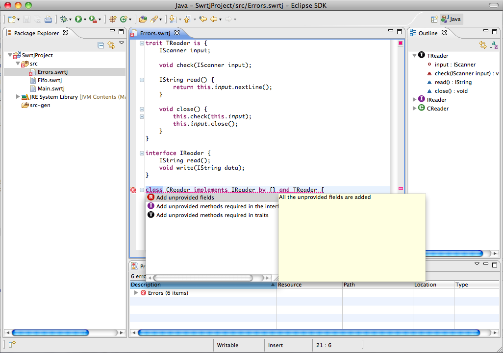

The quickfix is an Eclipse functionality that automatically corrects some program errors. To activate the quickfix, just click to the cross when an error occurs and choose the quick fix from the proposal list. This is shown in the following figure.
